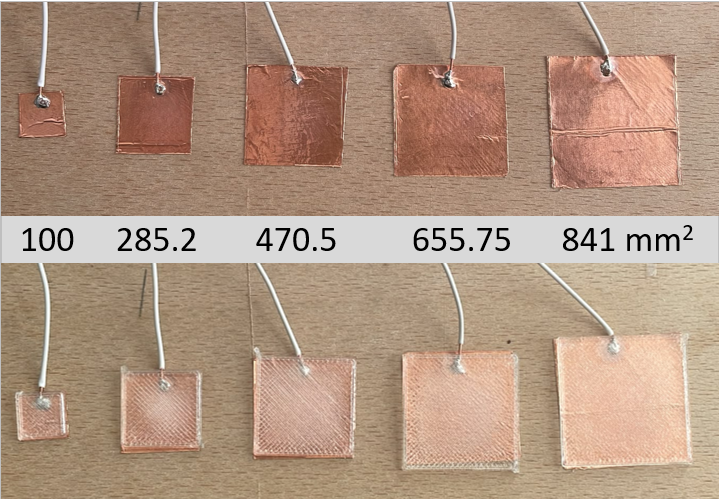

<!-- MathJax configuration -->
<script>
    window.MathJax = {
        tex: {
            inlineMath: [['$', '$'], ['\\(', '\\)']],
            displayMath: [['$$', '$$'], ['\\[', '\\]']]
        }
    };
</script>

<script defer src="https://cdn.jsdelivr.net/npm/mathjax@3/es5/tex-mml-chtml.js"></script>

<article class="space-y-6 max-w-none">

    <div class="border-b pb-4 dark:border-slate-700">
        <h2 class="text-2xl font-extrabold text-slate-900 dark:text-white">
            Chapter 3: Further Sensor testing
        </h2>
        <p class="text-sm text-slate-500 dark:text-slate-400 font-mono mt-1">
            3.1 Questions and test setup
        </p>
    </div>

    <p class="text-slate-700 dark:text-slate-300 text-sm leading-relaxed">
        To find out how large the individual pads of my scroll wheel need to be I started testing different sizes of sensor pads. Additionally, I wanted to know if it is possible to put a cover on top of the copper tape. So I also tested this case. Therefore, the two main questions I want to answer are: <br>
        1. What is the influence of copper pad size?<br>
        2. How does a 1mm thick PLA-cover influence the copper pad sensor?<br>
        <br>
        To answer Question (1) I cut five square copper pads of different sizes. The largest edge length was 29 mm, limited by my copper tape's width. the smallest was 10 mm. This resulted in areas between 100 and 841 mm^2. However, keep in mind that I used a box cutter, and all sizes are only approximately accurate. Those copper tape squares were then put on a plywood board. <br>
        Subsequently, I cut five pieces of solid core wire to the same length (to control for the wires influence) and soldered each to a copper pad. I also printed PLA covers in the right sizes for the copper squares with 1mm thickness.
    </p>

    <figure class="my-4 bg-slate-50 dark:bg-slate-900 p-3 rounded-2xl border border-slate-200 dark:border-slate-700">
        
        <figcaption class="text-center text-xs font-mono text-slate-500 dark:text-slate-400 mt-2">
            📸 Figure 1: The copper squares of different sizes with wire soldered to them
        </figcaption>
    </figure>

    <p class="text-slate-700 dark:text-slate-300 text-sm leading-relaxed">
        For testing, I always connected the wire to D0 to reduce potential influences of the different pins of my Xiao. I always recorded 10 seconds at <strong>20 Hz</strong> and used the middle 6 seconds (=120 values) for my basic analysis using excel. For this middle section I computed the median and standard deviation. <br>
        I conducted this test for three conditions:<br>
        (1) touching the bare copper square, (2) touching the PLA cover loosely placed over the copper square, and (3) touching the PLA square taped over the copper square.<br>
        Additionally I measured a Baseline for all conditions. During those measurements I didn't touch my set up at all. This will further be called <strong>No-Touch</strong>. This will be refered to as <strong>Touch</strong>. Using median values from both conditions a delta can be computed: <strong>Delta = Touch-No-Touch</strong>.
    </p>

    <section class="space-y-3">
        <h3 class="text-lg font-bold text-amber-600 dark:text-amber-400 font-mono">
            3.2 Results without Cover
        </h3>

        <p class="text-slate-700 dark:text-slate-300 text-sm leading-relaxed">
            The raw signal can be seen in Figure 2. The noise is tiny (SD = 7-10), while the jump when touched is enormous. The SD is also bigger during touch (SD = 420-665). However, a lot of this noise can be explained by my finger. The values seem to somewhat decrease during measurements. I also observed fluctuations when I slightly moved my finger during measurements. Hence, I tried to keep my finger as still as possible.
        </p>

        <figure class="my-4 bg-slate-50 dark:bg-slate-900 p-3 rounded-2xl border border-slate-200 dark:border-slate-700">
            
            <figcaption class="text-center text-xs font-mono text-slate-500 dark:text-slate-400 mt-2">
                📸 Figure 2: Raw values during Touch and No-Touch. Noise is tiny compared to touch step
            </figcaption>
        </figure>

        <p class="text-slate-700 dark:text-slate-300 text-sm leading-relaxed">
            While an increase of the area of the copper square increased the Baseline measurement values, this effect was decreasing with increasing size (+809, +464, +279, +182). Possible explanations for this decreasing effect could be the non linear method of measuring capacitance of the ESP32, or some kind of saturation effect. <br>
            Additionally, it was interessting to see that the Delta between Touch and No-Touch was hardly influenced by pad size (only 1.2% difference). I guess this is because the copper is touched directly and the delta is limited by my body’s capacitance, not by the pad size.
        </p>

        <figure class="my-4 bg-slate-50 dark:bg-slate-900 p-3 rounded-2xl border border-slate-200 dark:border-slate-700">
            
            <figcaption class="text-center text-xs font-mono text-slate-500 dark:text-slate-400 mt-2">
                📸 Figure 3: Influence of sensor size during baseline measurements
            </figcaption>
        </figure>

    </section>

    <section class="space-y-3">
        <h3 class="text-lg font-bold text-amber-600 dark:text-amber-400 font-mono">
            3.3 Results with cover
        </h3>

        <p class="text-slate-700 dark:text-slate-300 text-sm leading-relaxed">
            The most obvious change with the cover on is seen in the raw values in figure 2. The delta drops enormously: from ≈ 110,000, without cover to ≈ 2,900-11,300 with cover. So values drop to 3-10% of the bare condition. However, compared to the Touch-SD of the smallest pad (27.8) even the smallest Delta is still considerably larger (around 100 times larger).<br>
            An additional, less obvious change is the shift of values during baseline measurement. <br>
            In Figure 3 you can see that all values with the covered conditions (loose and taped) shifted by approximately 400 to 1,000 units compared to the bare condition, growing with pad size. When I discovered this shift, I removed the PLA-covers to see if they caused this shift. However, also without covers there was an obervable shift. However, since the shift grows with pad size, part of it might also be caused by the PLA cover itself, which increases the sensor’s capacitance.<br>
            I can only explain this to myself like this: <br>
            While at first I planned to just measure the bare condition during testing I realized that it would be good to test the covered conditions, since this would be the most probable use case anyways. So I quickly 3D-printed the covers, which took maybe 20 to 30 minutes. <br>
            During this whole time, conditions might have changed. For example the environment temperature or humidity could have changed, also the Xiao was measuring during this whole time period and might have warmed up influencing the measurements. It is well known that capacitance measurements are easily influenced by environmental changes. The increasing shift with increasing pad size could be caused by an increased capacitance of the sensor induced by the PLA-cover itself. I made a mental note and set it aside for now<br>
            <br>
            And finally, is there a influence of pad size with cover?<br>
            Look at figure 4! Something is obviously going on here. now the Delta increases distinctly with increasing pad size. For the loose cover it increases from 2.7% of the bare delta at the smallest pad to 9.2% of the bare pad for the largest pad. With taped down covers those values are very comparable.<br>
            How is this possible? The PLA cover might act as a capacitor in series. The coupling capacitance between my finger and the copper pad through the PLA is now the bottle-neck. The larger the pad, the better the coupling. <br>
            The double sided tape between copper and PLA had barely any effect. The delta was slightly higher, but this could also be attributed to something else like changes in temperature or simply noise.
        </p>

        <figure class="my-4 bg-slate-50 dark:bg-slate-900 p-3 rounded-2xl border border-slate-200 dark:border-slate-700">
            
            <figcaption class="text-center text-xs font-mono text-slate-500 dark:text-slate-400 mt-2">
                📸 Figure 4: The change of measured median touch raw values compared to baseline. Whiskers are one SD.
            </figcaption>
        </figure>

    </section>

    <section class="space-y-3">
        <h3 class="text-lg font-bold text-amber-600 dark:text-amber-400 font-mono">
            3.4 Learnings
        </h3>

        <p class="text-slate-700 dark:text-slate-300 text-sm leading-relaxed">
            1. Without cover, the pad-size is negligible for change in delta<br>
            2. With cover, pad size matters. However, the gain gets smaller for larger pads, possibly because my finger only covers part of the larger pads.<br>
            3. The cover swallows 90 to 97% of the signal, but even the smallest pad is sufficient for a reliable touch detection. <br>
            4. The baseline drifts! I need a baseline compensation in my code for the scroll wheel.<br>
            <br>
            Further thoughts: <br>
            If I want to increase the delta, I could design the cover a little thinner, or test different materials. <br>
            To achieve more reliable results I could use more measurements (longer periods and/or multiple touches) per pad size and condition, and of course have the covers ready before testing so conditions are approximately the same during all tests. Taking it a step further one could also controll finger pressure
        </p>

    </section>

</article>
